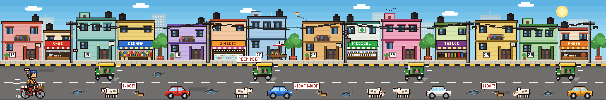
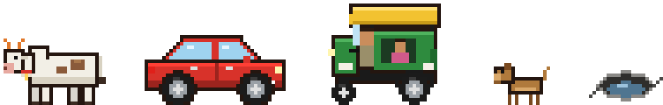
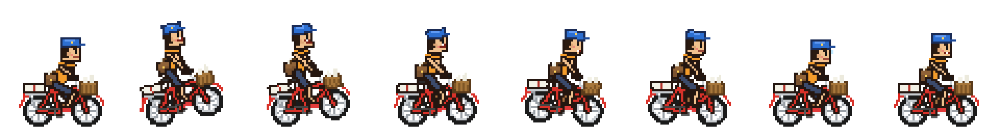
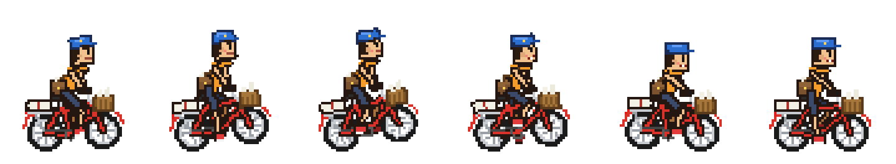
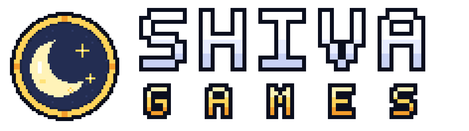
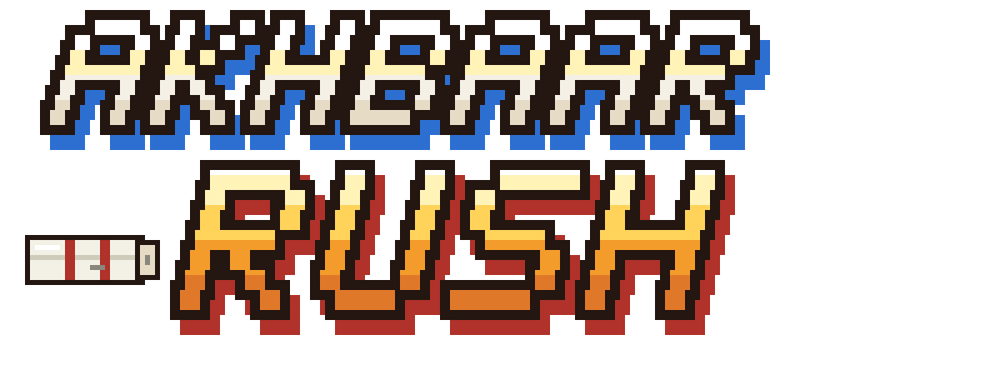
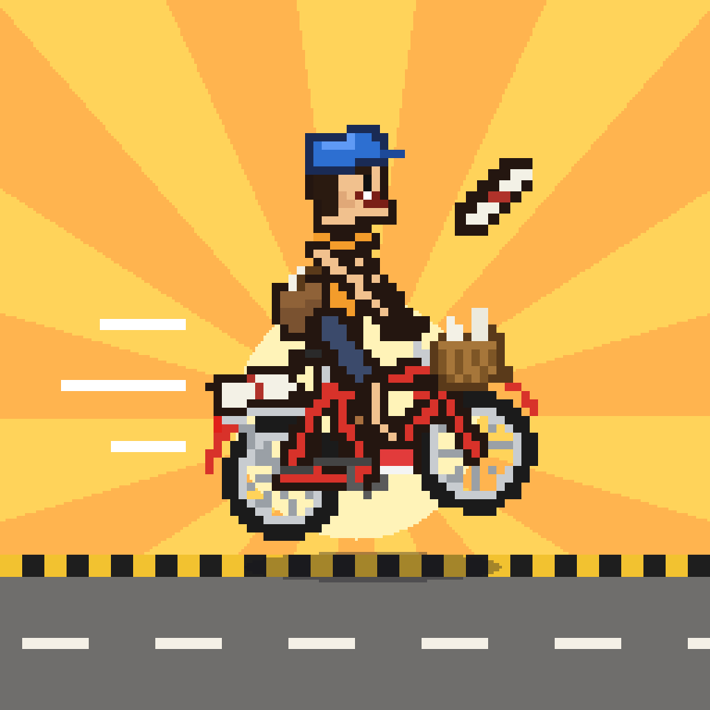

Akhbar Bash
A 16-bit paper round through India's galis. I designed it, art-directed it and shipped it as a mobile browser game in one afternoon, using Claude as my build partner.
- MY ROLE
- Concept, game and UX design, art direction, every review call
- BUILD PARTNER
- Claude: pixel art as code, engine, music, backend, tests
- PLATFORM
- Phone browser, landscape, installable to the home screen
- STACK
- HTML, CSS, JavaScript, Canvas, Web Audio, Supabase
Every gali has a morning soundtrack.
The cycle bell. A rolled newspaper slapping a gate. A cow that will not move. A dog that takes the whole thing personally. I grew up with that routine, and I had never seen it in a game.
Akhbar Bash started as a portfolio question: how far can one designer take an idea, end to end, when the production work is shared with an AI? I gave myself a constraint to keep it honest. It had to be a real game that real friends would play on their phones, not a concept board.
Phone held sideways
Landscape gives a side-scroller room to show the street coming at you.
One thumb, three gestures
Swipe up, swipe down, tap. Anyone should be playing within five seconds.
A link, not an app store
Runs in the browser, so I can share it on WhatsApp and push updates whenever I want.
Gali No. 4, not “a city”
It should feel local enough that a Delhi player spots Karol Bagh at a glance.
Twelve design decisions, made in the order a studio would make them.
I worked in short loops. I set direction, Claude produced it, I reviewed it, and I decided what changed. Each step below was its own brief, and nothing moved forward until the previous step looked right.
- 01
Character
A paperboy and his cycle, inspired by classic arcade run-and-gun sprites.
- 02
Detail pass
I locked 16-bit as the style and asked for more detail on the boy and the cycle.
- 03
World strip
A stretched street with homes, shops, cows, potholes, dogs, parked cars and autos.
- 04
Sprite sheets
Every character and obstacle cut into game-ready frames.
- 05
Organic motion
Lane changes and jumps animated so the boy and the cycle feel physical.
- 06
Start screen
A landscape title screen with all of its states.
- 07
Studio and cities
The Shiva Games brand, an app icon, plus Garage, Missions, Ranks and six local cities.
- 08
In-game HUD
Score, papers left and pause, readable at a glance mid-swipe.
- 09
Player identity
A name step on first launch so the leaderboard means something.
- 10
Build
The designs turned into a playable game, screen by screen.
- 11
Music
Chiptune tracks with a dholak groove, plus a bell for every delivery.
- 12
Ship
A package I can keep building in Claude Code and share with a link.
A hero who reads at 60 pixels tall.
The first pass gave me the right silhouette but felt generic. In the second pass I directed the detail that makes him Indian and makes him a paperboy: a cap, a cross-body satchel, a front basket of rolled papers, a bundle strapped to the carrier and a red roadster with real spokes.
Then came the hard part, which was keeping all of that legible in a 60×66 frame. Dark brown outlines instead of black, flat shading, no anti-aliasing, and a palette small enough to recolour later.
The street is the level designer.
Before any rules existed, I asked for one long strip of the route: numbered gates, a medical store, a sweet shop, overhead wires, water tanks on the roofs. The obstacles came straight out of that street, and each one turned into a rule.


- CowTall. Both lanes. Never in a hurry.
- Parked carTall. Blocks the house lane.
- AutoTall. Comes at you in the traffic lane.
- DogLow. Barks first, then runs. Jump it.
- PotholeLow. Everywhere. Jump it.
Making a swipe feel like steering.
My brief was “organic”. A sprite that just slides between lanes feels like a cursor. So every move was animated the way a real rider would do it, using classic animation principles at 16-bit scale.


One shared anchor holds it together. Every frame puts the rear wheel's ground contact at the same pixel, (18, 60), so the engine can swap frames at any moment without the rider jittering.
The best decision was the button I took away.
The problem
Three gestures on one thumb is already the limit. The obvious fourth action was “throw”. That would mean dodging a cow, timing a jump and aiming a paper all at once, which turns the fun part into homework.
The decision
Throwing became positional. Be in the house lane when a subscriber's gate passes and the paper flies on its own. Throw mid-jump and it counts as AIR MAIL for a bonus.
That one change created the core tension of the game. The house lane is where the points are, and it is also where the parked cars and dogs are. The traffic lane is safer for weaving, but you deliver nothing there. Every second, the player is choosing between greed and safety, without a single extra control.
Two journeys: the first ride and the hundredth.
No menus between a new player and the road. You are riding within about four taps.
Missions, Garage, Ranks and Settings sit one tap off the menu.
Six cities you can recognise from the skyline.
Every route is a real kind of street with a real address on the card: Gali No. 4, Karol Bagh. Landmarks sit in the backdrop as houses roll past, and each city's level 5 is an event a local would recognise.
A studio, a logo and an icon that survive at 20 pixels.



Engineering choices made for a designer who wants to keep shipping.
I am not an engineer, so every technical decision was judged by one test: can I change this next month without breaking it? Claude proposed the options, and I picked the ones that kept the game simple to own.
No build step
Plain HTML, CSS and JavaScript with no framework. Deploying is a git push, and the host redeploys in about a minute.
True pixel canvas
The world renders at 380×176 game pixels on whole-number positions, then scales to any phone with smoothing off. No blurry sprites.
Art as code
Every sprite and city strip is drawn by scripts that live in the repo. Changing a colour or adding a city means re-running a script, not redrawing.
Recolour at runtime
Cycle and cap colours are swapped pixel by pixel when the game loads, so 8 caps × 5 cycles need no extra art.
Music without files
A Web Audio synth plays three chiptune loops (menu at 104 bpm, the ride at 138 bpm with a dholak pattern, events at 152 bpm) and every sound effect.
Installable and offline
A PWA with full-screen landscape install. Code loads network-first so updates land fast, and players see a “New version ready” toast.
A leaderboard without logins
Supabase with row-level security. Browsers only read a public view and write through one function that checks a per-device secret, so nobody can overwrite someone else's score.
An automated play-through
A headless phone-sized browser plays the whole flow (name validation, riding, pause, every menu) and saves screenshots for review.
Ready for Claude Code
The package ships with a guide for Claude Code covering coordinates, how to add a city or cycle, and a release checklist, so the next feature is one request away.
What broke, and what I learned from it.
Speed hides mistakes, so I reviewed every screen as a set of previews before it counted as done. These are the issues that review caught.
- Whites rendered redThe colour parser only understood 6-digit hex. Short codes like #fff now expand correctly.
- The loading screen never leftA layout style beat the hidden state and covered the whole game. One global rule fixed every screen.
- A surprise reload on first visitThe offline worker refreshed the page mid-splash. It now reloads only when replacing an older version.
- Crowded HUD and cardsThe progress bar hit the papers chip, “GET READY” sat on the HUD and garage names overlapped the bikes. All were re-spaced and given the right type.
- Broken letterformsShearing pixel letters for an italic tore them apart. A per-row offset with wider spacing kept them whole.
Production got cheap. Judgement became the job.
What I decided
- The concept, the audience and the platform: phone, landscape, browser
- Art direction: 16-bit arcade, and how much detail the hero carries
- One-thumb controls: swipe up, swipe down, tap to jump
- Making it local, from city by city down to which landmarks
- A player name for the leaderboard, with privacy-safe nicknames
- Sign-off on every screen, and what had to be fixed
What Claude executed
- Pixel art, sprite sheets and animation, written as code
- Screen designs as canvas artboards, then the working UI
- The game engine, level generator and balance tables
- Synthesised music and sound effects
- The leaderboard backend, tested against a real database
- Automated tests, bug fixes and the shareable package
From a nostalgic thought to a link I can send.
Version 1.0 is a complete, installable game. It has six cities, sixty levels, a garage, a daily bonus, a weekly leaderboard, two languages, original music, and a codebase I can keep growing.
- Share it with friends and watch where they crash
- Tune the difficulty curve from real play
- A Kolkata route with Howrah Bridge in the backdrop
- Power-ups, like a coin magnet for the morning rush